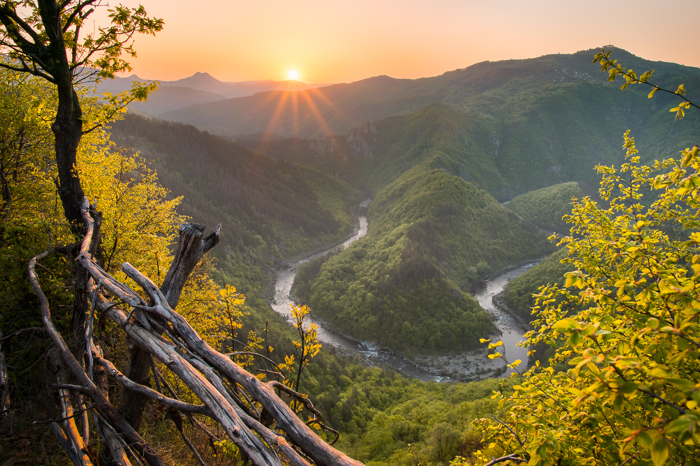
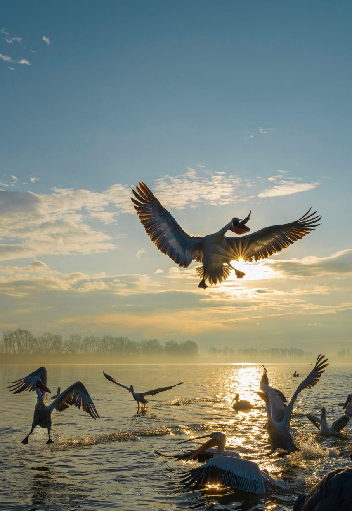
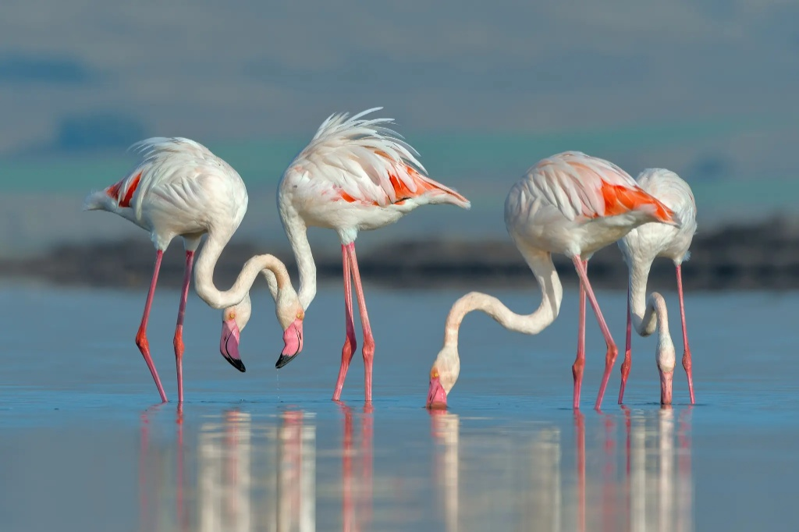
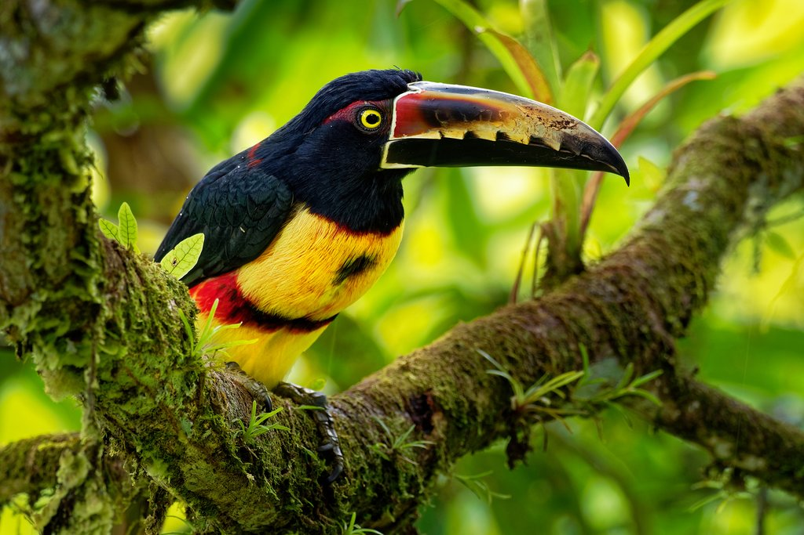
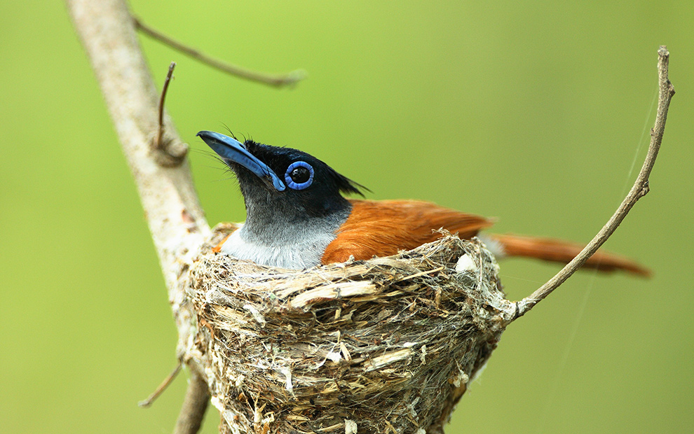
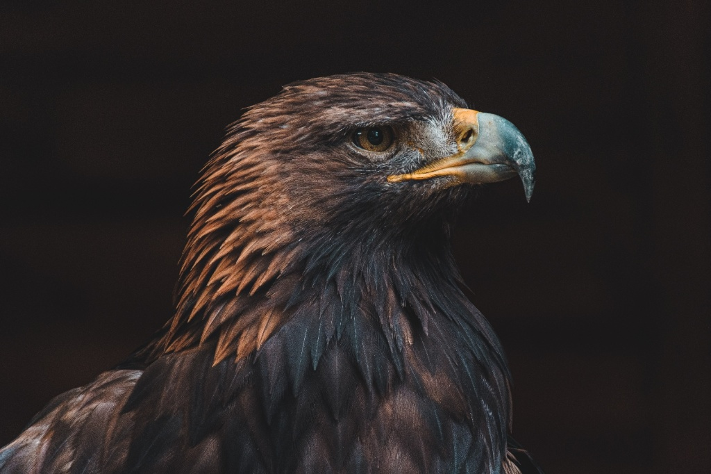
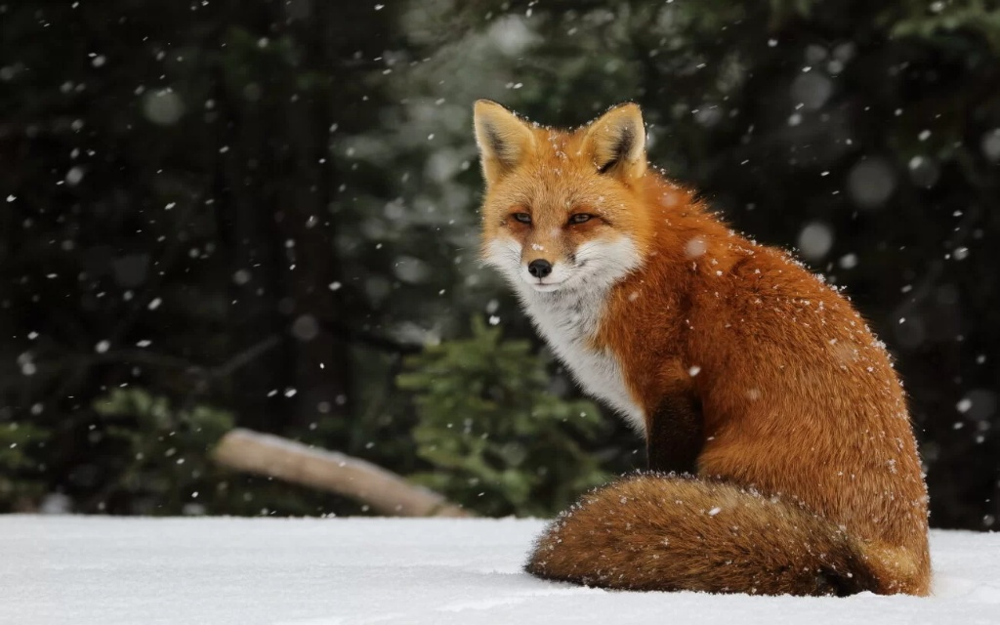
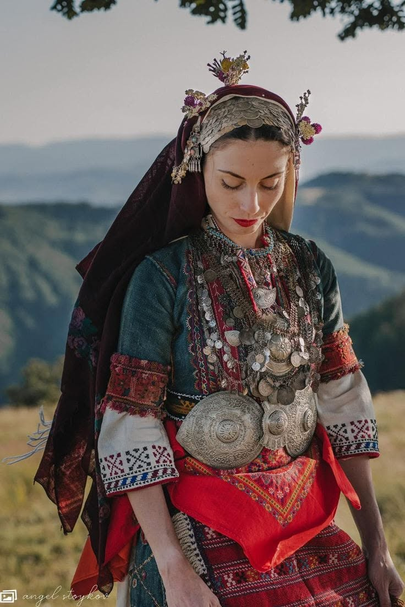
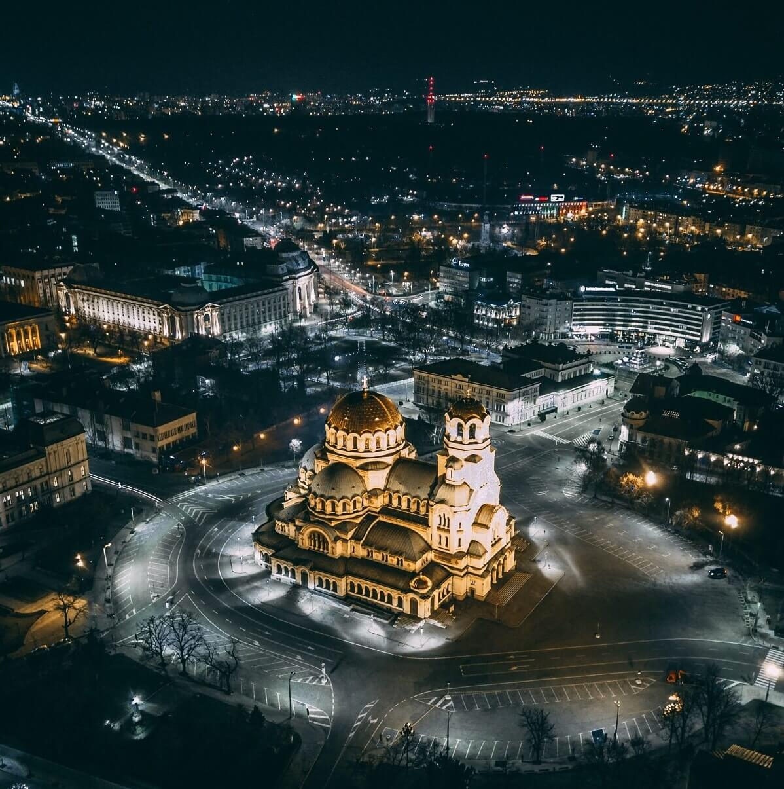
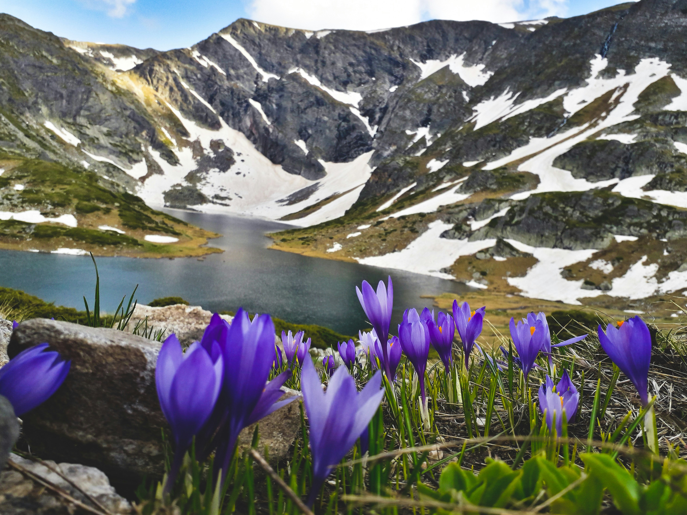

Chasing Golden Hour in the Rhodope Mountains
Insights on timing, elevation, and atmospheric light when scouting rare bird species across Southern Bulgaria.
Read Story →Small groups. Local expertise. Remarkable places. From regional sanctuaries to remote tropical wilderness, explored with patience and purpose.
Discover Destinations
Exclusive early-morning boat charters to shoot Dalmatian Pelicans at eye-level during golden hour.

Navigate the saline lagoons and Mandra wetlands. Capture flamingos and shorebirds during peak migration.

Alpine landscape and high-altitude wildlife photography, focusing on rare species amidst glacial vistas.

From the elusive Resplendent Quetzal in San Gerardo de Dota to multi-flash hummingbird setups in Sarapiquí and Tortuguero's waterways.

Track leopards in Yala, Asian elephants in Wilpattu, and endemic avifauna in Sinharaja rainforest. High-end safari jeeps & private lodges.






AVISIA was born from a desire to redefine photography travel in the Southern Balkans. We move away from rushed itineraries, favoring slow, deliberate exploration guided by natural light. By combining deep ecological knowledge with patient field craft, we offer intimate encounters with wild landscapes and rare species. Every journey is designed to foster a profound connection with nature, leaving time for authentic artistic expression.

Insights on timing, elevation, and atmospheric light when scouting rare bird species across Southern Bulgaria.
Read Story →
A closer look at local conservation efforts protecting the endangered Dalmatian Pelican population.
Read Story →"We had a fantastic day exploring remarkable nature spots near Sofia. Our guide possessed exceptional knowledge of birds and local ecology, making the whole trip not only fruitful for photography, but also extremely interesting. Highly recommended to any nature lover!"
"Attention to detail, excellent logistics and the choice of locations exceeded our expectations. The guidance for perfect shots and the opportunity to experience Bulgaria's wildlife in its best light were the cherry on top. Great brand with a true heart!"
"An incredible wildlife experience. The combination of birdwatching, local culture, and professional photography insights made this journey truly unique. Unmatched expertise and care."